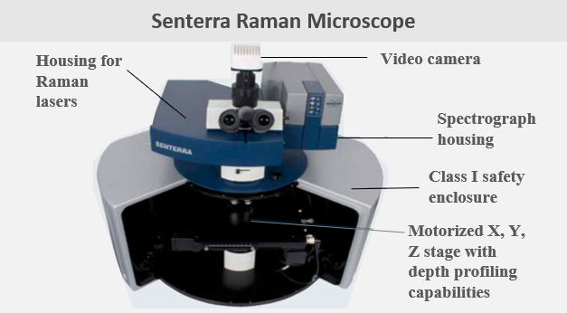
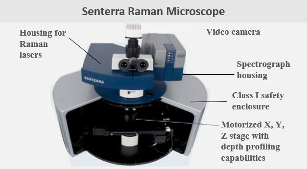

Instrumentation
Spectral data were collected at the CDPH-EHLB in Richmond, CA. The following instruments were used for spectral acquisition:
Renishaw inVia Raman Microscope (785nm, 532nm)
Senterra Raman Microscope (785nm, 532nm)
DeltaNu ReporteR handheld spectrometer (785nm)
 


Data Processing
For subtracting the fluorescence baseline from the raw spectra the Vancouver Raman Algorithm, as developed by J. Zhao et. al., was employed.
Below we provide a MATLAB GUI implemetation of this fluorescence subtraction algorithm.
Please note that you must have the MATLAB Compiler Runtime (MCR) Version 8.1 installed in order to run the executable (MCR Download Link).